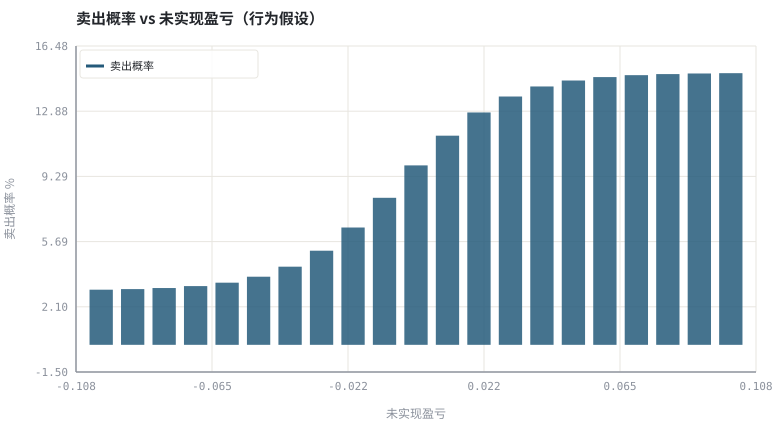
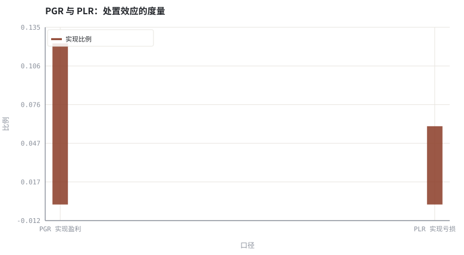

第 22 章有效市场、行为偏差与处置效应
价格不一定「正确」，但想稳定套利，你得先证明错误是可重复、可执行的。
本章位置：第 21 章给出「理性基准下的收益分解」，本章补上系统性偏离；第 23 章 · 资金流、情绪与拥挤交易 讨论许多人同时偏离时会发生什么。
行为偏差是决策函数里的一个系统性偏置项：sell_prob = f(pnl, reference_point) 而非 f(期望收益)。只要偏置稳定可测，就能写进模型；但它是否带来可交易的错误定价，是另一个问题。
- 能说明有效市场三种形式与对应的可检验命题。
- 能解释损失厌恶、参照点、锚定与羊群效应。
- 能用 PGR/PLR 度量处置效应并复现它。
- 能区分「市场不理性」与「存在可交易的错误定价」。
§知识点地图
每个知识点都配了 1～2 个扩展学习链接；本章完整资源清单见 扩展学习。
| # | 知识点 | 扩展学习 | 状态 |
|---|---|---|---|
| 1 | 有效市场假说 | Efficient-market hypothesis · Behavioral finance | 正文已覆盖 |
| 2 | 弱式/半强式/强式检验 | Efficient-market hypothesis · Behavioral finance | 正文已覆盖 |
| 3 | 前景理论与损失厌恶 | Prospect theory · Disposition effect | 正文已覆盖 |
| 4 | 参照点与锚定 | Efficient-market hypothesis · Behavioral finance | 正文已覆盖 |
| 5 | 处置效应与 PGR/PLR | Disposition effect · Prospect theory | 正文已覆盖 |
| 6 | 羊群与反馈环 | Herd behavior · Behavioral finance | 正文已覆盖 |
| 7 | 套利限制 | Efficient-market hypothesis · Behavioral finance | 正文已覆盖 |
| 8 | 偏差不等于策略 | Efficient-market hypothesis · Behavioral finance | 正文已覆盖 |
§22.1有效市场是一个可证伪的基准
| 形式 | 信息集 | 若成立则 | 常见检验 |
|---|---|---|---|
| 弱式 | 历史价量 | 技术指标无法持续获得超额收益 | 序列相关、游程、事件前后收益 |
| 半强式 | 全部公开信息 | 财报/新闻公布后无持续漂移（除漂移本身争议） | 事件研究 |
| 强式 | 含内幕信息 | 任何信息都无法持续套利 | 内幕交易监管与执法数据 |
有效市场不是说价格永远等于价值，而是说扣除成本与风险后，公开信息难以被稳定套利。它是 H0，不是信仰：任何「我找到了规律」的主张都要先跨过成本、样本外与多重检验三道门槛。
§22.2前景理论：效用定义在变化上，而不是财富上
U(ΔW) 在亏损区更陡（损失厌恶），且价值函数对收益凹、对损失凸
这解释了两个常见现象：处置效应（过早卖出盈利、过久持有亏损）与锚定（把买入价、历史高点当参照点）。第 17 章说的「支撑阻力」，在行为层面可以理解为大量持仓共用同一个参照点。
§22.3套利限制：为什么错误定价可以长期存在
- 基本面风险：价格可能在收敛前继续远离价值。
- 噪声交易者风险：其他人非理性使短期亏损扩大。
- 实施成本：借券、保证金、流动性、期限与赎回压力。
- 同步性：大家同时平仓时，相关性趋近 1（第 23 章）。
「别人错了」不等于「你能赚到」。可交易性是一个工程约束，不是一个观点。
§Python 分析实例
实验 22-1 · 处置效应的可测量版本（PGR / PLR）
#!/usr/bin/env python3
# -*- coding: utf-8 -*-
"""模拟带损失厌恶的卖出概率，计算实现盈利比例与实现亏损比例。
数据为合成数据或模型示意，仅用于教学，不构成投资建议。
"""
from __future__ import annotations
import math
import pathlib
import random
import statistics
import sys
sys.path.insert(0, str(pathlib.Path(__file__).resolve().parents[3] / "tools"))
from chart import Chart, candlestick, heatmap, BLUE, RED, GREEN, AMBER
FIG = pathlib.Path(__file__).resolve().parents[1] / "fig"
FIG.mkdir(exist_ok=True)
random.seed(7)
# ---- 参数区 ----
N_DAYS, N_POS = 250, 1200
START, DRIFT, VOL = 50.0, 0.0004, 0.012
BASE_SELL = 0.03 # 基准卖出概率
GAIN_EXTRA = 0.12 # 盈利时的额外卖出倾向
STEEP = 60.0 # 概率函数陡峭程度
# ---- 计算与作图 ----
def sell_prob(pnl):
return BASE_SELL + GAIN_EXTRA / (1 + math.exp(-STEEP * pnl))
rng = random.Random(7)
px, prices = START, []
for _ in range(N_DAYS):
px *= (1 + rng.gauss(DRIFT, VOL))
prices.append(px)
sell_g = hold_g = sell_l = hold_l = 0
win_days, lose_days = [], []
for _ in range(N_POS):
entry = rng.randrange(0, N_DAYS - 20)
ep = prices[entry]
for t in range(entry + 1, N_DAYS):
pnl = prices[t] / ep - 1
if rng.random() < sell_prob(pnl):
if pnl > 0:
sell_g += 1; win_days.append(t - entry)
else:
sell_l += 1; lose_days.append(t - entry)
break
if pnl > 0:
hold_g += 1
else:
hold_l += 1
pgr = sell_g / (sell_g + hold_g) if sell_g + hold_g else 0.0
plr = sell_l / (sell_l + hold_l) if sell_l + hold_l else 0.0
pnl_bins = [-0.10 + i * 0.01 for i in range(21)]
probs = [100 * sell_prob(x + 0.005) for x in pnl_bins]
c = Chart(FIG / "22-disposition.svg", "卖出概率 vs 未实现盈亏（行为假设）",
xlabel="未实现盈亏", ylabel="卖出概率 %")
c.bars(pnl_bins, probs, BLUE, label="卖出概率")
print("概率图:", c.save())
b = Chart(FIG / "22-pgr.svg", "PGR 与 PLR：处置效应的度量", xlabel="口径", ylabel="比例",
xticks=[(0, "PGR 实现盈利"), (1, "PLR 实现亏损")])
b.bars([0, 1], [pgr, plr], RED, label="实现比例")
print("度量图:", b.save())
print("PGR=%.4f PLR=%.4f 差值=%+.4f | 盈利持仓平均持有=%.1f 天 亏损=%.1f 天" %
(pgr, plr, pgr - plr,
statistics.fmean(win_days) if win_days else 0,
statistics.fmean(lose_days) if lose_days else 0))操作：把 GAIN_EXTRA 设为 0（无偏差），PGR 与 PLR 应接近；再调大观察差值。 预期与判读：当卖出概率随浮盈上升时，PGR 显著大于 PLR，且盈利持仓的平均持有期更短——这正是「拔掉鲜花、浇灌野草」的量化形式。此处偏差是人为注入的，真实市场需用账户数据检验。
改参数看趋势：把 DRIFT 改成负数，观察整体浮盈变少后 PGR/PLR 的绝对水平如何变化。 文件位置：part4/22-behavior/code/22-disposition.py


代码块右上角可一键复制；仓库里的 code/*.py 由 tools/extract_code.py 从这些代码块自动抽取。脚本只用标准库、固定 random.seed(7)，运行后写出 fig/*.svg；批量运行用 ./tools/run_python.sh。
§本章参考资料
按本章知识点挑选的精读资料；更多检索入口见 扩展学习。
Efficient-market hypothesis
百科 · 参考资料价格是否已反映可用信息
怎么用：有效市场假说的三种形式与检验https://en.wikipedia.org/wiki/Efficient-market_hypothesis
Disposition effect
百科 · 参考资料过早卖出盈利、过久持有亏损
怎么用：处置效应的经典度量https://en.wikipedia.org/wiki/Disposition_effect
Behavioral finance
百科 · 参考资料系统性偏离理性的行为偏差
怎么用：行为金融的偏差清单https://en.wikipedia.org/wiki/Behavioral_finance
§常见误区
- 把「市场不理性」直接推导成「我能赚钱」。
- 用单一偏差解释所有价格现象。
- 忽略套利限制与资金期限。
- 把处置效应归因于税收或再平衡而不做对照。
§习题与思考
- 推导 PGR/PLR 的定义，并说明为什么要用「比例」而非「次数」。
- 在示例里加入一个理性对照组（sell_prob 为常数），比较两者 PGR−PLR。
- 列举一个「看似行为偏差、其实是制度约束」的例子。
§扩展学习
以下资料按本章知识点挑选，可直接精读或对照真实数据；知识点地图里每一条也挂了 1～2 个直达链接。
- Efficient-market hypothesis（百科）：价格是否已反映可用信息
Efficient-market hypothesis - Behavioral finance（百科）：系统性偏离理性的行为偏差
Behavioral finance - Prospect theory（百科）：参照点依赖与损失厌恶
Prospect theory - Disposition effect（百科）：过早卖出盈利、过久持有亏损
Disposition effect - CFA Institute（机构）：投资组合管理、道德准则与从业者教育
CFA Institute
继续扩展：在 Google Scholar 检索本章相关论文 · 在 MIT OCW 检索配套课程 · 在 arXiv 检索预印本 · 全书参考资源总表 · 附录 A 速查与链接总表
§延伸阅读与内链
- 第 23 章 · 资金流、情绪与拥挤交易 拥挤与反转；第 24 章 · 怎样读一篇因子论文：从摘要到可复现 从论文里识别偏差类主张；第 31 章 · 投资政策说明书与长期复盘 用决策日志约束自己。